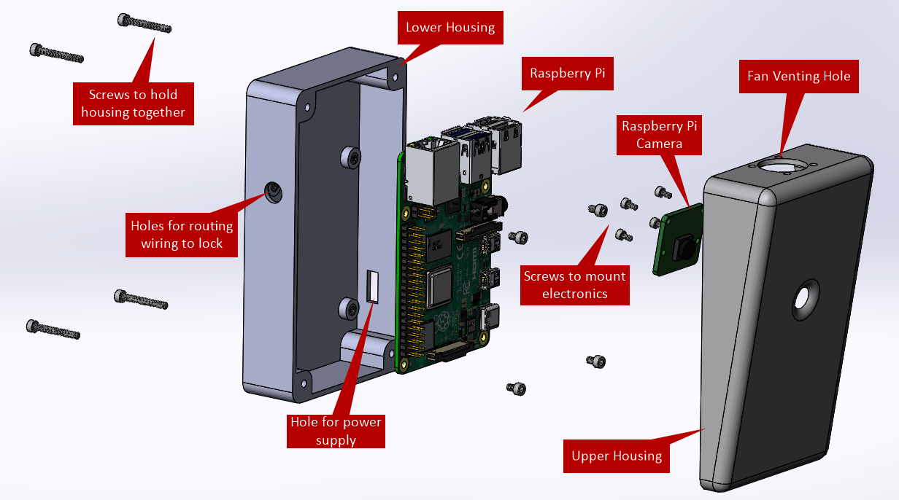

I'm a 8th grade student. I like Math, Science, Social Study.
I like playing violin, Guzheng, basketball, drawing, singing, dance and musical
WatCounts

WatCounts is an occupancy tracking application designed for the University of Waterloo.
The system uses a Raspberry Pi with a camera to track the number of people entering and exiting the library.
A mechanical enclosure was designed to hold the Pi and position the camera above the library door.
I implemented human detection using the pre-trained OpenCV linear SVM, and I used a centroid tracking algorithm to determine the direction each person was moving in.
The project was a success with over 90% tracking accuracy! View the code here: WatCounts
Magneto is a robot designed to follow a path while detecting the polarity of hidden magnets.
When the robot detects a strong magnetic field, it stops and flashes the LED before continuing the course.
I programmed the robot in C and soldered components on the PCB, including optical encoders and a hall-effect sensor.
Date:
May - July 2019
Technologies:
PCB design, surface-mount soldering, C programming
Pothole Finder
The Pothole Finder uses an Arduino board with an accelerometer to detect sudden changes in the downward/upward acceleration of a car, indicating that it has hit a pothole.
When potholes are detected, the GPS sensor records the coordinates and sends them to an SQL database.
A Python script then uses this data to plot locations on a map using the Google Maps Plotter API.
I completed this project during the Make UofT Hackathon in a group of 3. My role was to write the Python script to collect data from the SQL database.
See the code here: Pothole Finder
Date:
Feb 2019
Technologies:
Arduino, GPS, accelerometer, Python, MySQL
Machining and Fabrication
I have completed several projects in the machine shop.
Pictured on the left is an aluminum tic-tac-toe board I designed in SolidWorks.
I machined the aluminum and brass pegs using a lathe, and the base using a mill and drill press.
The phone stand, pictured on the right, was also designed in SolidWorks and prototyped using a 3D printer.
Date:
Sept - Dec 2017
Tools:
SolidWorks, lathe, mill, drill press, 3D printer
Piano Bot
The Piano Bot was designed as a tool to allow children to experiment with composing music.
The roobot runs along a track of coloured squares, each of which represents a music note.
After reading each of the notes, the stylus swivels to play the correct notes of the song.
A LEGO EV3 robot was used as the base model, with additional 3D printed and laser cut parts added.
The robot was programmed in C, available here: Piano Bot
Date:
Jan - Apr 2018
Technologies:
LEGO EV3, 3D printer, laser cutter, sensors, C programming
Embedded Minesweeper
I developed a Minesweeper game in C that runs on a Keil development board.
The game randomly distributes mines on a 9x9 grid and allows users to place flags or dig up mines.
The player selects squares on the grid using a joystick, and uses one of two pushbuttons to place flags or dig.
Check out the code here: Minesweeper
Date:
May - Aug 2019
Technologies:
Keil development board, C programming, joystick and pushbutton interfacing